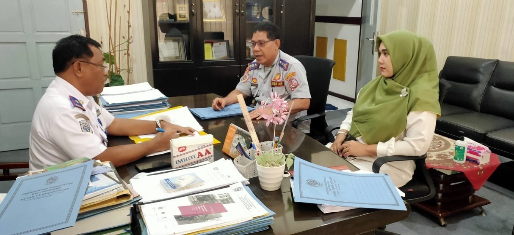

1. Melakukan konsultasi dengan mentor dalam rangka penyusunan aksi perubahan
Dalam konsultasi ini dengan mentor penulis yaitu membahas program penyusunan aksi perubahan dalam optimalisasi parkir khusus di P3UD dengan bapak Suryadi Aritonang selaku Kepala Dinas Perhubungan Kabupaten Deli Serdang, dimana dari hasil pembuatan program realiasi e-parking ini menggunakan dana yang besar, dan waktu yang tidak memungkinkan sehingga menjadi bahan pertimbangan untuk mengimplementasikannya apabila tim efektifnya dilakukan oleh dari tim dinas perhubungan sendiri, sehingga adanya ide bahwasanya bekerja sama dengan BUMD.
2. Melakukan konsultasi dan koordinasi dengan stakeholders internal

Diskusi ini membahas program e-parking ini direaliasikan di P3UD dan untuk memastikan para anggota tim berkontribusi dengan menerapkan ketrampilan-ketrampilan yang mereka miliki sesuai dengan beban kerja masing- masing, dan membuat rancangan pekerjaan dan misi yang harus dilakukan oleh setiap anggota tim kerja untuk mencapai visi tim. Desain pekerjaan dapat berupa rincian tugas dan pembagiannya, memberikan skala prioritas, serta timeline.
3. Melakukan konsultasi dan koordinasi dengan stakeholders eksternal
konsultasi dan koordinasi dengan stakeholders eksternal maka penulis melakukan diskusi dan meminta dukungan kepada Sekretaris Daerah Kabupaten Deli Serdang yaitu bapak Darwin Zein,S.Sos. Dimana hal ini mendapat dukungan penuh dari beberapa stakeholders. Setiap bagian mendapatkan informasi yang jelas mengenai pencapaian dan tujuan dan mengetahui perannya masing-masing sehingga dapat memberikan masukan dan saran.
4. Pembentukan Tim Efektif
Membentuk tim efektif dalam merealiasikan optimalisasi program e-parking ini di P3UD Deli Serdang agar lebih terhandle atau terkendali dalam membentuk efektifitas. Maka dari itu diskusi oleh beberapa rekanan dan beberapa tim dalam menetetapkan tujuan tim dari dibentuknya sebuah tim kerja akan membantu tim selalu berada di jalur yang tepat untuk melakukan upaya-upaya meraih kesuksesan, dan membuat kolaborasi memungkinkan sharing skills antara anggota tim dengan memberikan kontribusi yang berbeda-beda dari setiap anggota tim pada pekerjaan. Sehingga, setiap anggota tim saling melengkapi dalam menyelesaikan misi.
5. Pembahasan perencanaan dalam rangka aksi perubahan
Pembahasan perencaan dalam rangka aksi perubahan ini Dinas Perhubungan Kabupaten Deli Serdang memutuskan bahwa bekerja sama dengan pihak BUMD yaitu PT. Fan Solusindo Bersama (Fun Parking). Fun Parking Computerized System / Fun Parking Integrated System (FPIS) adalah sistem komputer yang dirancang untuk memantau transfer data. FPIS memungkinkan akses data secara cepat dan akurat, baik dalam kegiatan keuangan dan operasional dengan sistem keamanan terjamin.